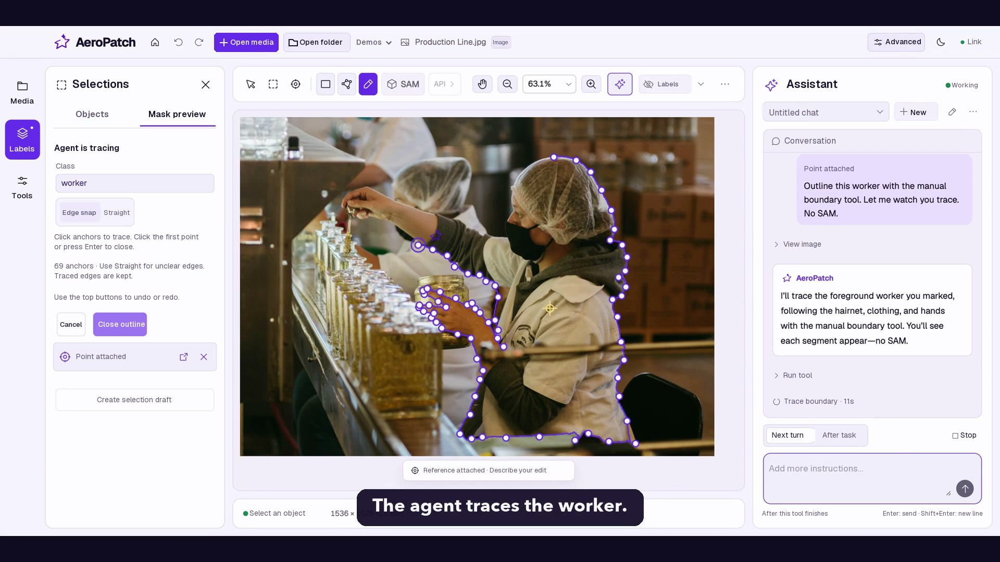

Point, select, or describe.
Open an image or video. Mark a target with a point or box, trace a contour, or ask the agent for an object-level operation.
“Find all palm crowns in this image.”Language · Vision · Interaction
An interactive visual agent workspace
for images and video.
Describe a task. Let the agent use visual tools.
Inspect, refine, and export the results in one desktop workspace.
Local-first desktop Human review Source code private

The agent works with the canvas, calls editing tools, and returns results you can inspect and refine.
Videos play through Google Drive. If the embedded player is unavailable, use “Open video”.
The workspace
Visual tasks need more than a text response. AeroPatch connects an agent to image and video tools, editable project state, and a canvas where people can review the outcome.
The current prototype runs as a local desktop application, with local model workers and configurable API connections.
Open an image or video. Mark a target with a point or box, trace a contour, or ask the agent for an object-level operation.
“Find all palm crowns in this image.”The agent can use segmentation, object discovery, and temporal tracking workflows, then inspect the resulting masks and artifacts.
Review proposed masks and uncertain video spans. Refine or confirm drafts before exporting annotations, images, or rendered video.
Technical approach
The agent chooses tools.
The workspace preserves evidence and user control.
Instructions, media, selections, and existing masks.
Interpret the goal, choose tools, and inspect their output.
Run local workers or API-assisted image and video workflows.
Inspect drafts, refine annotations, and save the result.
Tiled visual localization finds individual objects. Bounded local recovery revisits a region with crowded detections, while grouped SAM segmentation turns object boxes into masks. Instance association links duplicate observations across views.
Source coordinates and immutable mask revisions preserve how each candidate was produced. Candidates remain available for human inspection and acceptance.
Watch the image workflowLocal SAM propagation tracks a selected target across frames. The separate ARCH workflow adds temporal census, identity checks, retrace, and recovery to investigate suspected drift.
Uncertain intervals retain review flags. The timeline and canvas let users inspect tracking drafts before accepting or exporting them.
Watch the video workflowEngineering focus
Connecting a model to a tool is one step. Keeping long visual tasks observable, reviewable, and consistent with an interactive editor takes a shared execution model.
Current scope
Demonstrated today. Agent-driven visual tool use, interactive image annotation, local video tracking, and verification and review workflows in selected scenarios. The videos show recorded prototype runs.
Looking ahead. Support Physical AI training data curation by identifying consequential visual failures and helping decide which data to keep, repair, or reject. Dataset-scale autonomous curation is a research goal.
Generated masks still require review; identity checks do not establish correctness on every frame. Local segmentation can run without a cloud account; agent and VLM-assisted workflows use configured model connections.
Project & access
AeroPatch is a collaborative research and engineering project.
The demos and this project overview are public; the application source code remains private.